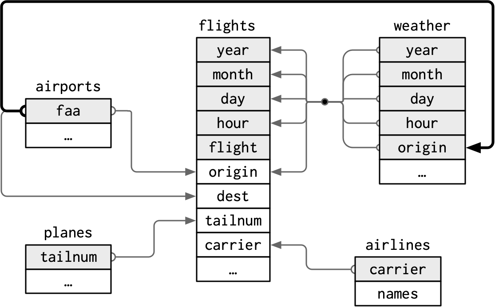
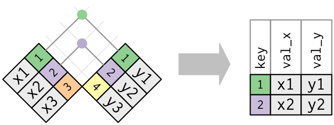
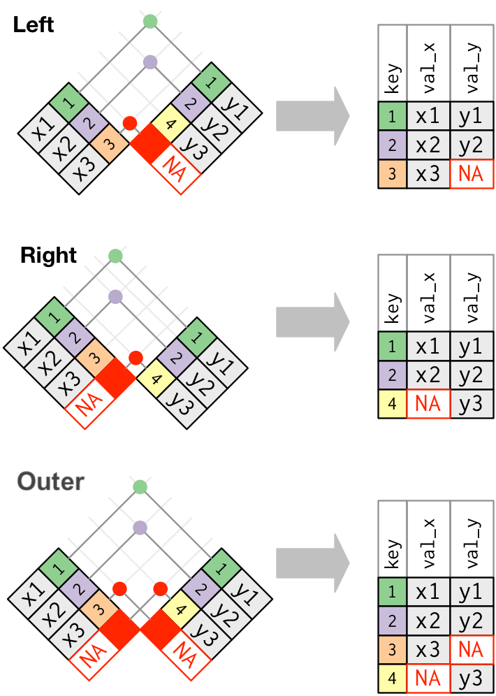
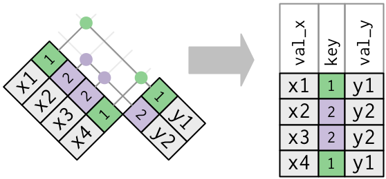
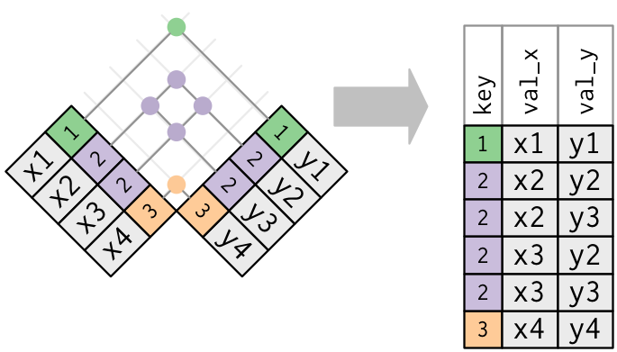

Load Packages
# numerical calculation & data frames
import numpy as np
import pandas as pd
# visualization
import matplotlib.pyplot as plt
import seaborn as sns
import seaborn.objects as so
# statistics
import statsmodels.api as smR for Data Science by Wickham & Grolemund
# numerical calculation & data frames
import numpy as np
import pandas as pd
# visualization
import matplotlib.pyplot as plt
import seaborn as sns
import seaborn.objects as so
# statistics
import statsmodels.api as sm# pandas options
pd.options.display.precision = 2
pd.options.display.float_format = (
"{:.2f}".format
) # pd.reset_option('display.float_format')
pd.options.display.max_rows = 7
# Numpy options
np.set_printoptions(precision=2, suppress=True)
nycflights13
flights, airlines, airports, planes, weather are related
# Load the nycflight13 dataset
flights = sm.datasets.get_rdataset("flights", "nycflights13").data.drop(columns="time_hour")airlines = sm.datasets.get_rdataset("airlines", "nycflights13").data
airlines carrier name
0 9E Endeavor Air Inc.
1 AA American Airlines Inc.
2 AS Alaska Airlines Inc.
.. ... ...
13 VX Virgin America
14 WN Southwest Airlines Co.
15 YV Mesa Airlines Inc.
[16 rows x 2 columns]airports = sm.datasets.get_rdataset("airports", "nycflights13").data
airports faa name lat lon alt tz dst \
0 04G Lansdowne Airport 41.13 -80.62 1044 -5 A
1 06A Moton Field Municipal Airport 32.46 -85.68 264 -6 A
2 06C Schaumburg Regional 41.99 -88.10 801 -6 A
... ... ... ... ... ... .. ..
1455 ZWI Wilmington Amtrak Station 39.74 -75.55 0 -5 A
1456 ZWU Washington Union Station 38.90 -77.01 76 -5 A
1457 ZYP Penn Station 40.75 -73.99 35 -5 A
tzone
0 America/New_York
1 America/Chicago
2 America/Chicago
... ...
1455 America/New_York
1456 America/New_York
1457 America/New_York
[1458 rows x 8 columns]planes = sm.datasets.get_rdataset("planes", "nycflights13").data
planes tailnum year type manufacturer \
0 N10156 2004.00 Fixed wing multi engine EMBRAER
1 N102UW 1998.00 Fixed wing multi engine AIRBUS INDUSTRIE
2 N103US 1999.00 Fixed wing multi engine AIRBUS INDUSTRIE
... ... ... ... ...
3319 N998AT 2002.00 Fixed wing multi engine BOEING
3320 N998DL 1992.00 Fixed wing multi engine MCDONNELL DOUGLAS CORPORATION
3321 N999DN 1992.00 Fixed wing multi engine MCDONNELL DOUGLAS CORPORATION
model engines seats speed engine
0 EMB-145XR 2 55 NaN Turbo-fan
1 A320-214 2 182 NaN Turbo-fan
2 A320-214 2 182 NaN Turbo-fan
... ... ... ... ... ...
3319 717-200 2 100 NaN Turbo-fan
3320 MD-88 2 142 NaN Turbo-jet
3321 MD-88 2 142 NaN Turbo-jet
[3322 rows x 9 columns]weather = sm.datasets.get_rdataset("weather", "nycflights13").data
weather origin year month day hour temp dewp humid wind_dir wind_speed \
0 EWR 2013 1 1 1 39.02 26.06 59.37 270.00 10.36
1 EWR 2013 1 1 2 39.02 26.96 61.63 250.00 8.06
2 EWR 2013 1 1 3 39.02 28.04 64.43 240.00 11.51
... ... ... ... ... ... ... ... ... ... ...
26112 LGA 2013 12 30 16 32.00 15.08 49.19 340.00 14.96
26113 LGA 2013 12 30 17 30.92 12.92 46.74 320.00 17.26
26114 LGA 2013 12 30 18 28.94 10.94 46.41 330.00 18.41
wind_gust precip pressure visib time_hour
0 NaN 0.00 1012.00 10.00 2013-01-01 01:00:00
1 NaN 0.00 1012.30 10.00 2013-01-01 02:00:00
2 NaN 0.00 1012.50 10.00 2013-01-01 03:00:00
... ... ... ... ... ...
26112 23.02 0.00 1019.50 10.00 2013-12-30 16:00:00
26113 NaN 0.00 1019.90 10.00 2013-12-30 17:00:00
26114 NaN 0.00 1020.90 10.00 2013-12-30 18:00:00
[26115 rows x 15 columns]planes의 경우 tailnum가 primary key?
planes.duplicated(subset="tailnum").sum()0(planes.value_counts("tailnum") > 1).sum()0weather의 경우 네 변수 year, month, day, hour, origin의 조합이 primary key일 수 있으나…
(
weather[["year", "month", "day", "hour", "origin"]]
.value_counts()
.reset_index(name="n")
.query("n > 1")
) year month day hour origin n
0 2013 11 3 1 EWR 2
1 2013 11 3 1 JFK 2
2 2013 11 3 1 LGA 2primary key가 되려면 다음과 같이 불명확한 정보를 처리한 후 사용
weather[
weather.duplicated(subset=["year", "month", "day", "hour", "origin"], keep="first")
] origin year month day hour temp dewp humid wind_dir wind_speed
7319 EWR 2013 11 3 1 50.00 39.02 65.80 290.00 5.75 \
16024 JFK 2013 11 3 1 51.98 37.94 58.62 310.00 6.90
24730 LGA 2013 11 3 1 53.96 39.92 58.89 310.00 8.06
wind_gust precip pressure visib time_hour
7319 NaN 0.00 1010.50 10.00 2013-11-03 01:00:00
16024 NaN 0.00 1010.50 10.00 2013-11-03 01:00:00
24730 NaN 0.00 1010.20 10.00 2013-11-03 01:00:00 flights에 primary key가 있는가?
flights.duplicated(subset=["year", "month", "day", "flight"]).sum()32610flights.duplicated(subset=["year", "month", "day", "tailnum"]).sum()85049merge(): Key에 해당하는 변수들의 값이 매치되는 방식으로 두 DataFrame이 combine
concat(): 공통의 행 또는 열이 align되어 join
Inner join
df_x = pd.DataFrame({"key": [1, 2, 3], "val_x": ["x1", "x2", "x3"]})
df_y = pd.DataFrame({"key": [1, 2, 4], "val_y": ["y1", "y2", "y3"]}) key val_x
0 1 x1
1 2 x2
2 3 x3 key val_y
0 1 y1
1 2 y2
2 4 y3
pd.merge(df_x, df_y, on="key") # 공통의 column이 있을 시 "on=" 생략 가능 key val_x val_y
0 1 x1 y1
1 2 x2 y2df_x.merge(df_y, on="key") # as a method key val_x val_y
0 1 x1 y1
1 2 x2 y2merge()는 default로 inner 방식으로 join하고, how="inner"가 위에서 생략되었고, 다음과 동일
pd.merge(df_x, df_y, on="key", how="inner")다른 방식으로는 “left”, “right”, “outer”가 있음
left keeps all observations in x. : 가장 흔하게 쓰는 join. 기준이 되는 데이터가 존재right keeps all observations in y.outer keeps all observations in x and y.

pd.merge(df_x, df_y, how="left") key val_x val_y
0 1 x1 y1
1 2 x2 y2
2 3 x3 NaNpd.merge(df_x, df_y, how="right") key val_x val_y
0 1 x1 y1
1 2 x2 y2
2 4 NaN y3pd.merge(df_x, df_y, how="outer") key val_x val_y
0 1 x1 y1
1 2 x2 y2
2 3 x3 NaN
3 4 NaN y3한쪽만 중복이 있는 경우

flights2 = flights[
["year", "month", "day", "hour", "origin", "dest", "tailnum", "carrier"]
]
flights2 year month day hour origin dest tailnum carrier
0 2013 1 1 5 EWR IAH N14228 UA
1 2013 1 1 5 LGA IAH N24211 UA
2 2013 1 1 5 JFK MIA N619AA AA
... ... ... ... ... ... ... ... ...
336773 2013 9 30 12 LGA BNA N535MQ MQ
336774 2013 9 30 11 LGA CLE N511MQ MQ
336775 2013 9 30 8 LGA RDU N839MQ MQ
[336776 rows x 8 columns]# flights에 항공사의 full name을 추가하고자 할때,
(
flights2
.drop(["origin", "dest"], axis=1)
.merge(airlines, on="carrier", how="left")
) year month day hour tailnum carrier name
0 2013 1 1 5 N14228 UA United Air Lines Inc.
1 2013 1 1 5 N24211 UA United Air Lines Inc.
2 2013 1 1 5 N619AA AA American Airlines Inc.
... ... ... ... ... ... ... ...
336773 2013 9 30 12 N535MQ MQ Envoy Air
336774 2013 9 30 11 N511MQ MQ Envoy Air
336775 2013 9 30 8 N839MQ MQ Envoy Air
[336776 rows x 7 columns]두 쪽 모두 중복이 있는 경우: 조심!
can’t uniquely identify an observation; 가능한 모든 조합이 나타남

The default, uses all variables that appear in both tables, the so called natural join.
flights2.merge(weather, how="left")
# on=["year", "month", "day", "hour", "origin"] year month day hour origin dest tailnum carrier temp dewp humid \
0 2013 1 1 5 EWR IAH N14228 UA 39.02 28.04 64.43
1 2013 1 1 5 LGA IAH N24211 UA 39.92 24.98 54.81
2 2013 1 1 5 JFK MIA N619AA AA 39.02 26.96 61.63
... ... ... ... ... ... ... ... ... ... ... ...
336773 2013 9 30 12 LGA BNA N535MQ MQ 69.08 48.02 46.99
336774 2013 9 30 11 LGA CLE N511MQ MQ 66.92 48.92 52.35
336775 2013 9 30 8 LGA RDU N839MQ MQ 60.98 51.08 69.86
wind_dir wind_speed wind_gust precip pressure visib \
0 260.00 12.66 NaN 0.00 1011.90 10.00
1 250.00 14.96 21.86 0.00 1011.40 10.00
2 260.00 14.96 NaN 0.00 1012.10 10.00
... ... ... ... ... ... ...
336773 70.00 5.75 NaN 0.00 1016.70 10.00
336774 70.00 8.06 NaN 0.00 1017.50 10.00
336775 NaN 5.75 NaN 0.00 1018.60 10.00
time_hour
0 2013-01-01 05:00:00
1 2013-01-01 05:00:00
2 2013-01-01 05:00:00
... ...
336773 2013-09-30 12:00:00
336774 2013-09-30 11:00:00
336775 2013-09-30 08:00:00
[336776 rows x 18 columns]flights의 year와 planes의 year는 다른 의미의 year임
중복된 이름은 따로 표기
flights2.merge(planes, on="tailnum", how="left")
# year_x, year_y로 구분되어 표시 year_x month day hour origin dest tailnum carrier year_y \
0 2013 1 1 5 EWR IAH N14228 UA 1999.00
1 2013 1 1 5 LGA IAH N24211 UA 1998.00
2 2013 1 1 5 JFK MIA N619AA AA 1990.00
... ... ... ... ... ... ... ... ... ...
336773 2013 9 30 12 LGA BNA N535MQ MQ NaN
336774 2013 9 30 11 LGA CLE N511MQ MQ NaN
336775 2013 9 30 8 LGA RDU N839MQ MQ NaN
type manufacturer model engines seats speed \
0 Fixed wing multi engine BOEING 737-824 2.00 149.00 NaN
1 Fixed wing multi engine BOEING 737-824 2.00 149.00 NaN
2 Fixed wing multi engine BOEING 757-223 2.00 178.00 NaN
... ... ... ... ... ... ...
336773 NaN NaN NaN NaN NaN NaN
336774 NaN NaN NaN NaN NaN NaN
336775 NaN NaN NaN NaN NaN NaN
engine
0 Turbo-fan
1 Turbo-fan
2 Turbo-fan
... ...
336773 NaN
336774 NaN
336775 NaN
[336776 rows x 16 columns]airports 데이터프레임에서 공항이름이 faa라는 이름의 column으로 존재.
도착지(dest)의 공항정보를 얻으려면, faa와 dest를 매치시키고,
출발지(origin)의 공항정보를 얻으려면, faa와 origin를 매치시켜야 함.
airports faa name lat lon alt tz dst \
0 04G Lansdowne Airport 41.13 -80.62 1044 -5 A
1 06A Moton Field Municipal Airport 32.46 -85.68 264 -6 A
2 06C Schaumburg Regional 41.99 -88.10 801 -6 A
... ... ... ... ... ... .. ..
1455 ZWI Wilmington Amtrak Station 39.74 -75.55 0 -5 A
1456 ZWU Washington Union Station 38.90 -77.01 76 -5 A
1457 ZYP Penn Station 40.75 -73.99 35 -5 A
tzone
0 America/New_York
1 America/Chicago
2 America/Chicago
... ...
1455 America/New_York
1456 America/New_York
1457 America/New_York
[1458 rows x 8 columns]flights2.merge(airports, left_on="dest", right_on="faa", how="left") year month day hour origin dest tailnum carrier faa \
0 2013 1 1 5 EWR IAH N14228 UA IAH
1 2013 1 1 5 LGA IAH N24211 UA IAH
2 2013 1 1 5 JFK MIA N619AA AA MIA
... ... ... ... ... ... ... ... ... ...
336773 2013 9 30 12 LGA BNA N535MQ MQ BNA
336774 2013 9 30 11 LGA CLE N511MQ MQ CLE
336775 2013 9 30 8 LGA RDU N839MQ MQ RDU
name lat lon alt tz dst \
0 George Bush Intercontinental 29.98 -95.34 97.00 -6.00 A
1 George Bush Intercontinental 29.98 -95.34 97.00 -6.00 A
2 Miami Intl 25.79 -80.29 8.00 -5.00 A
... ... ... ... ... ... ..
336773 Nashville Intl 36.12 -86.68 599.00 -6.00 A
336774 Cleveland Hopkins Intl 41.41 -81.85 791.00 -5.00 A
336775 Raleigh Durham Intl 35.88 -78.79 435.00 -5.00 A
tzone
0 America/Chicago
1 America/Chicago
2 America/New_York
... ...
336773 America/Chicago
336774 America/New_York
336775 America/New_York
[336776 rows x 16 columns]flights2.merge(airports, left_on="origin", right_on="faa", how="left") year month day hour origin dest tailnum carrier faa \
0 2013 1 1 5 EWR IAH N14228 UA EWR
1 2013 1 1 5 LGA IAH N24211 UA LGA
2 2013 1 1 5 JFK MIA N619AA AA JFK
... ... ... ... ... ... ... ... ... ...
336773 2013 9 30 12 LGA BNA N535MQ MQ LGA
336774 2013 9 30 11 LGA CLE N511MQ MQ LGA
336775 2013 9 30 8 LGA RDU N839MQ MQ LGA
name lat lon alt tz dst tzone
0 Newark Liberty Intl 40.69 -74.17 18 -5 A America/New_York
1 La Guardia 40.78 -73.87 22 -5 A America/New_York
2 John F Kennedy Intl 40.64 -73.78 13 -5 A America/New_York
... ... ... ... ... .. .. ...
336773 La Guardia 40.78 -73.87 22 -5 A America/New_York
336774 La Guardia 40.78 -73.87 22 -5 A America/New_York
336775 La Guardia 40.78 -73.87 22 -5 A America/New_York
[336776 rows x 16 columns]pd.concat([df1, df2, ...], axis=)
행과 열의 index를 매치시켜 두 DataFrame/Series를 합침
df1 = pd.DataFrame(
np.arange(6).reshape(3, 2), index=["a", "b", "c"], columns=["one", "two"]
)
df2 = pd.DataFrame(
5 + np.arange(4).reshape(2, 2), index=["a", "c"], columns=["three", "four"]
) one two
a 0 1
b 2 3
c 4 5 three four
a 5 6
c 7 8pd.concat([df1, df2], axis=1) one two three four
a 0 1 5.00 6.00
b 2 3 NaN NaN
c 4 5 7.00 8.00pd.concat([df1, df2]) # default: axis=0 one two three four
a 0.00 1.00 NaN NaN
b 2.00 3.00 NaN NaN
c 4.00 5.00 NaN NaN
a NaN NaN 5.00 6.00
c NaN NaN 7.00 8.00merge()를 이용해 필요로하는 부분을 필터링 할 수 있음
예를 들어, flights2 테이블에서 가장 인기있는 도착지 10군데를 찾는 경우
top_dest = flights2.value_counts("dest").head(10).reset_index(name="n")
top_dest dest n
0 ORD 17283
1 ATL 17215
2 LAX 16174
.. ... ...
7 FLL 12055
8 MIA 11728
9 DCA 9705
[10 rows x 2 columns]flights2.merge(top_dest, on="dest") # inner join year month day hour origin dest tailnum carrier n
0 2013 1 1 5 JFK MIA N619AA AA 11728
1 2013 1 1 6 EWR MIA N633AA AA 11728
2 2013 1 1 6 EWR MIA N53442 UA 11728
... ... ... ... ... ... ... ... ... ...
141142 2013 9 30 21 EWR DCA N14902 EV 9705
141143 2013 9 30 21 JFK DCA N807MQ MQ 9705
141144 2013 9 30 14 JFK DCA NaN 9E 9705
[141145 rows x 9 columns]다음과 같은 isin()을 이용할 수 있음
flights2[flights2["dest"].isin(top_dest["dest"])]Index 값을 key로 하는 merge의 경우: left_on, right_on 대신 left_index=True, right_index=True
간단히 .join() method를 이용해 중복된 column이 없는 두 DataFrame을 merge할 수 있음 (index 매치 & left-merge): df1.join(df2)
다양한 combine 방식은 교재를 참고.
8.2 Combining and Merging Datasets in McKinney’s
merge은 매우 조심스러운 작업!
Start by identifying the variables that form the primary key in each table.
# 확인작업은 기본
weather[
weather.duplicated(subset=["year", "month", "day", "hour", "origin"], keep=False)
]
# origin year month day hour temp dewp humid wind_dir wind_speed ...
# 7318 EWR 2013 11 3 1 51.98 39.02 61.15 310.00 6.90
# 7319 EWR 2013 11 3 1 50.00 39.02 65.80 290.00 5.75
# 16023 JFK 2013 11 3 1 53.96 37.94 54.51 320.00 9.21
# 16024 JFK 2013 11 3 1 51.98 37.94 58.62 310.00 6.90
# 24729 LGA 2013 11 3 1 55.04 39.02 54.67 330.00 9.21
# 24730 LGA 2013 11 3 1 53.96 39.92 58.89 310.00 8.06 Check that none of the variables in the primary key are missing. If a value is missing then it can’t identify an observation!
Check that your foreign keys match primary keys in another table.